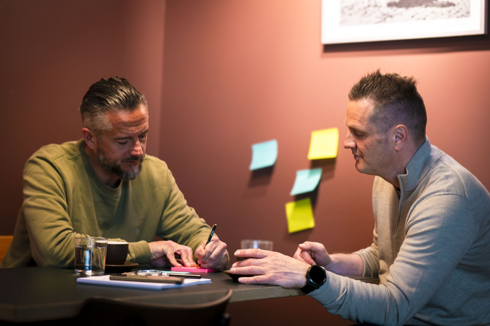

Metode og foredrag · MotSonen™
Endring starter der folk tør å si hva de mener.
De fleste organisasjoner har ikke et kompetanseproblem.
De har et ærlighetsproblem.
Folk ser risikoene, konfliktene, feilene — men sier det ikke høyt.
MotSonen™ er metoden for å endre det. Bygget på erfaring fra mennesker som har vært på begge sider av bordet.
Temperatur · Ærlighet · Struktur · Mot · MotSonen™ · Brave Temperature™ · Temperatur · Ærlighet · Struktur · Mot · MotSonen™ · Brave Temperature™ · Temperatur · Ærlighet · Struktur · Mot · MotSonen™ · Brave Temperature™ · Temperatur · Ærlighet · Struktur · Mot · MotSonen™ · Brave Temperature™ ·